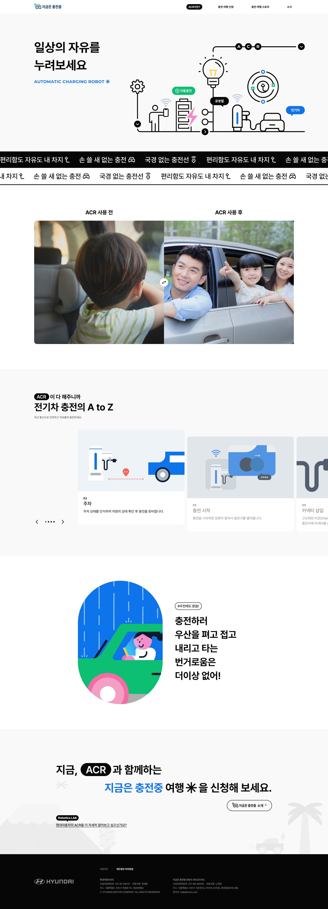

2024
Hyundai ACR
현대자동차 ACR(Automotive Carbon Reduction) 캠페인을 위한 마이크로 사이트로, 스크롤 기반 애니메이션·SVG 인트로· Before & After 드래그 인터랙션을 구현했습니다.
이벤트 페이지 · 현재 비공개Screenshots


Background
현대자동차 ACR(Automotive Carbon Reduction) 캠페인의 일환으로 제작된 마이크로 사이트 프로젝트입니다. 단순한 정보 전달을 넘어, 캠페인 참여 시 기대되는 효과를 시각적으로 체감할 수 있는 인터랙티브한 경험을 구현하는 것이 목표였습니다. 글로벌 브랜드의 기준에 맞는 완성도와 일정 준수가 핵심 과제였습니다.
Responsibilities
- ScrollMagic.js + ScrollTrigger.js를 활용한 섹션별 스크롤 기반 애니메이션 구현
- SVG Path 드로잉 애니메이션을 인트로에 적용하여 로딩 체감 시간 단축
- 마우스 드래그 기반 Before & After 이미지 비교 인터랙션 구현
- PC·모바일 터치 이벤트 병행 처리로 전 디바이스 인터랙션 대응
- 전 섹션 반응형 레이아웃 마크업 및 크로스 브라우저 대응
Key Challenge
Before & After 드래그 컴포넌트가 mousedown/mousemove 이벤트만으로 구현되어 모바일·태블릿 터치 환경에서 전혀 작동하지 않았습니다.
touchstart/touchmove/touchend 이벤트를 mousedown/mousemove/mouseup과 병행 등록하고, 좌표 계산 로직을 공통 함수로 추상화하여 입력 방식에 무관하게 동일하게 작동하도록 개선했습니다.
모바일·태블릿·PC 전 디바이스에서 드래그 인터랙션 정상 작동. 캠페인 효과를 직관적으로 전달하는 핵심 인터랙션이 완성되었습니다.
Retrospective
현대자동차라는 글로벌 브랜드의 캠페인을 담당하며 완성도와 일정 준수에 대한 책임감이 어느 때보다 컸습니다. SVG 애니메이션과 스크롤 인터랙션을 동시에 다루며 브라우저가 화면을 렌더링하는 방식에 대한 이해가 깊어졌고, 마우스와 터치 이벤트를 통일하는 과정에서 이벤트 추상화의 중요성을 체감한 프로젝트였습니다.